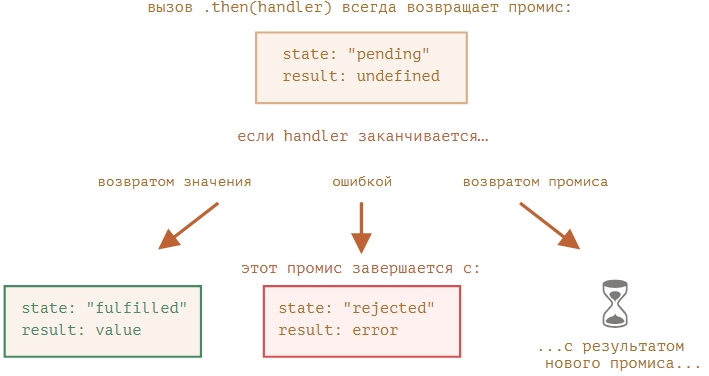

Цепочка выглядить вот так:
new Promise(function(resolve, reject) {
setTimeout(() => resolve(1), 1000); // (*)
}).then(function(result) { // (**)
alert(result); // 1
return result * 2;
}).then(function(result) { // (***)
alert(result); // 2
return result * 2;
}).then(function(result) {
alert(result); // 4
return result * 2;
});
То есть происходит поэтапная передача результата, через сначала возврат результата из промиса, затем из then.
Это не тоже самое, как обработка результатов промиса многими вызовами then:
let promise = new Promise(function(resolve, reject) {
setTimeout(() => resolve(1), 1000);
});
promise.then(function(result) {
alert(result); // 1
return result * 2;
});
promise.then(function(result) {
alert(result); // 1
return result * 2;
});
promise.then(function(result) {
alert(result); // 1
return result * 2;
})
В then можно засунуть ещё один промис, необходимо для ассинхронной обработки результата:
new Promise(function(resolve, reject) {
setTimeout(() => resolve(1), 1000);
}).then(function(result) {
alert(result); // 1
return new Promise((resolve, reject) => { // (*)
setTimeout(() => resolve(result * 2), 1000);
});
}).then(function(result) { // (**)
alert(result); // 2
return new Promise((resolve, reject) => {
setTimeout(() => resolve(result * 2), 1000);
});
}).then(function(result) {
alert(result); // 4
});
Перед нами пример поэтапной загрузки и добавления скриптов на страницу.
function loadScript(src) {
return new Promise(function(resolve, reject) {
let script = document.createElement('script');
script.src = src;
script.onload = () => resolve(script);
script.onerror = () => reject(new Error(`Ошибка загрузки скрипта ${src}`));
document.head.append(script);
});
}
loadScript("one.js")
.then(function(script) {
return loadScript("two.js");
})
.then(function(script) {
return loadScript("three.js");
})
.then(function(script) {
// вызовем функции, объявленные в загружаемых скриптах,
// чтобы показать, что они действительно загрузились
one();
two();
three();
});
А после выполнения.
Этот же код можно переписать немного компактнее, используя стрелочные функции:
loadScript("/article/promise-chaining/one.js")
.then(script => loadScript("/article/promise-chaining/two.js"))
.then(script => loadScript("/article/promise-chaining/three.js"))
.then(script => {
// скрипты загружены, мы можем использовать объявленные в них функции
one();
two();
three();
});
Технически мы бы могли добавлять .then напрямую к каждому вызову loadScript, вот так:
loadScript("/article/promise-chaining/one.js").then(script1 => {
loadScript("/article/promise-chaining/two.js").then(script2 => {
loadScript("/article/promise-chaining/three.js").then(script3 => {
// эта функция имеет доступ к переменным script1, script2 и script3
one();
two();
three();
});
});
});
Этот код делает то же самое: последовательно загружает 3 скрипта. Но он «растёт вправо», так что возникает такая
же проблема, как и с колбэками.
Иногда всё же приемлемо добавлять .then напрямую, чтобы вложенная в него функция имела доступ к внешней области
видимости. В примере выше самая глубоко вложенная функция обратного вызова имеет доступ ко всем переменным
script1, script2, script3. Но это скорее исключение, чем правило.
Если быть более точными, обработчик может возвращать не именно промис, а любой объект, содержащий метод .then, такие объекты называют «thenable», и этот объект будет обработан как промис.
Смысл в том, что сторонние библиотеки могут создавать свои собственные совместимые с промисами объекты. Они могут иметь свои наборы методов и при этом быть совместимыми со встроенными промисами, так как реализуют метод .then.
Вот пример такого объекта:
class Thenable {
constructor(num) {
this.num = num;
}
then(resolve, reject) {
alert(resolve); // function() { native code }
// будет успешно выполнено с аргументом this.num*2 через 1 секунду
setTimeout(() => resolve(this.num * 2), 1000); // (**)
}
}
new Promise(resolve => resolve(1))
.then(result => {
return new Thenable(result); // (*)
})
.then(alert); // показывает 2 через 1000мс
Для примера он использует fetch, его синтаксис:
let promise = fetch(url);
В первом случае он использует загрузку фото, с отображением и исчезновением через 3 секунды:
// Запрашиваем user.json
fetch('/article/promise-chaining/user.json')
// Загружаем данные в формате json
.then(response => response.json())
// Делаем запрос к GitHub
.then(user => fetch(`https://api.github.com/users/${user.name}`))
// Загружаем ответ в формате json
.then(response => response.json())
// Показываем аватар (githubUser.avatar_url) в течение 3 секунд (возможно, с анимацией)
.then(githubUser => {
let img = document.createElement('img');
img.src = githubUser.avatar_url;
img.className = "promise-avatar-example";
document.body.append(img);
setTimeout(() => img.remove(), 3000); // (*)
});
Чтобы фото оказалось сверху он использует такую css обрамлённую style на странице:
.promise-avatar-example {
border-radius: 50%;
position: fixed;
left: 10px;
top: 10px;
}
А здесь добавлена возможность показа аватарки и после отработки таймера, до клика мышью по alert:
fetch('/article/promise-chaining/user.json')
.then(response => response.json())
.then(user => fetch(`https://api.github.com/users/${user.name}`))
.then(response => response.json())
.then(githubUser => new Promise(function(resolve, reject) { // (*)
let img = document.createElement('img');
img.src = githubUser.avatar_url;
img.className = "promise-avatar-example";
document.body.append(img);
setTimeout(() => {
img.remove();
resolve(githubUser); // (**)
}, 3000);
}))
// срабатывает через 3 секунды
.then(githubUser => alert(`Закончили показ ${githubUser.name}`));
Можно разбить этот код на функции пригодные для повторного использования:
function loadJson(url) {
return fetch(url)
.then(response => response.json());
}
function loadGithubUser(name) {
return fetch(`https://api.github.com/users/${name}`)
.then(response => response.json());
}
function showAvatar(githubUser) {
return new Promise(function(resolve, reject) {
let img = document.createElement('img');
img.src = githubUser.avatar_url;
img.className = "promise-avatar-example";
document.body.append(img);
setTimeout(() => {
img.remove();
resolve(githubUser);
}, 3000);
});
}
// Используем их:
loadJson('/article/promise-chaining/user.json')
.then(user => loadGithubUser(user.name))
.then(showAvatar)
.then(githubUser => alert(`Показ аватара ${githubUser.name} завершён`));
Если обработчик в .then (или в catch/finally, без разницы) возвращает промис, последующие элементы цепочки ждут, пока этот промис выполнится. Когда это происходит, результат его выполнения (или ошибка) передаётся дальше.
Вот полная картина происходящего:
